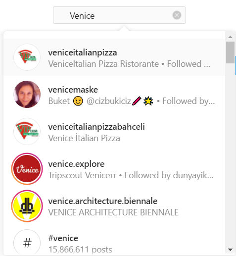
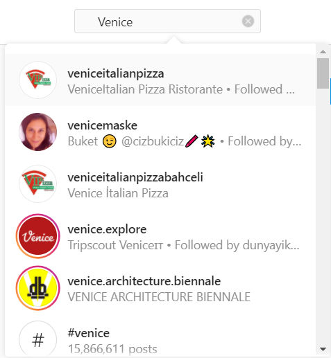
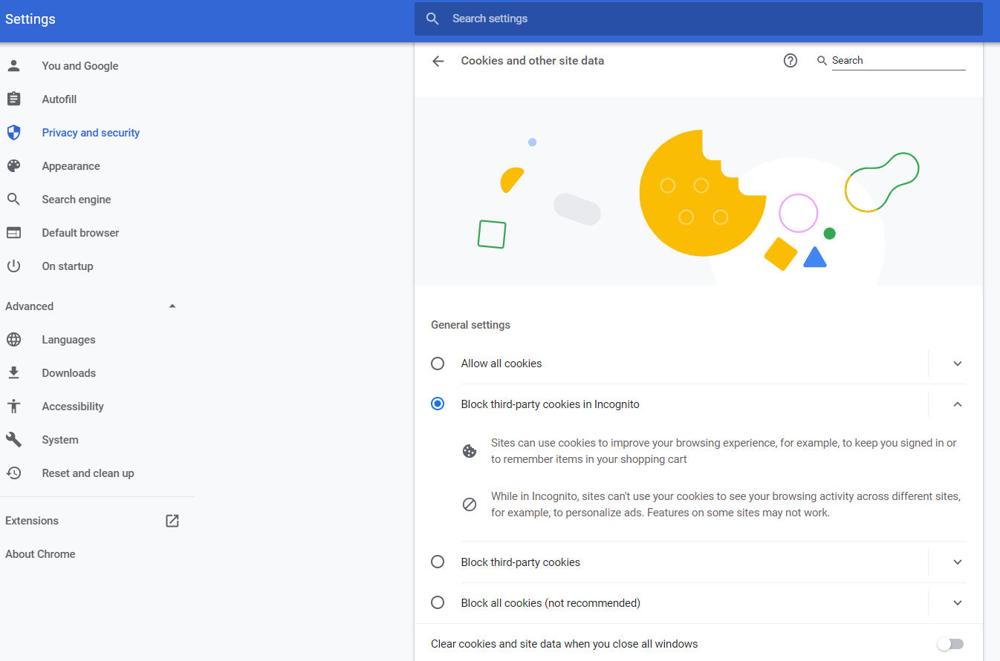
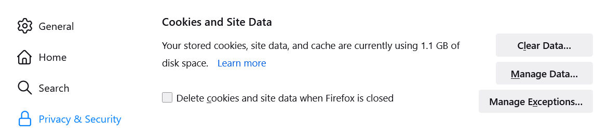

Trainees Edition
Trainers Edition
Trainees Edition
Trainers Edition
MODUL 15: UPRAVLJANJE FILTROV
Opis modula
Glavni namen tega modula je razložiti, kako upravljati filtre in kaj lahko storite, da se jim izognete.
Sekundarni namen je usmerjanje predavateljev, ki želijo vsebino tega modula uporabiti pri usposabljanju svojih udeležencev.
S temi cilji je predstavljeno upravljanje filtrov skupaj s smernicami o tem, kako poučevati to temo.
Udeleženci, ki bodo uspešno zaključili ta modul, bodo razumeli:
- kaj je personalizacija in njene vrste
- učinke personalizacije in filtriranja
- kaj lahko uporabniki storijo, da se izognejo filtrirnim mehurčkom
- kaj lahko storijo platforme, da se izognejo filtrirnim mehurčkom
Poleg tega bodo predavatelji, ki bodo uspešno zaključili ta modul, lahko pokazali razumevanje, kako poučevati upravljanje filtrov in kaj je mogoče storiti, da bi se izognili filtrirnim mehurčkom.
Struktura modula
Ta modul je sestavljen iz naslednjih delov:
- Opis modula (cilji, opis vsebine in učni rezultati)
- Struktura modula
- Smernice za udeležence usposabljanja
- Smernice za izvajalce usposabljanja (kako se pripraviti, metode za uporabo in nasveti za izvajalce usposabljanja)
- Vsebina (študijsko gradivo in vaje)
- Kviz
- Viri (reference in priporočeni viri ter videoposnetki)
Glavni cilji modula, opis vsebine in učni rezultati so pojasnjeni v delu Opis modula. Smernice za udeležence usposabljanja vključujejo navodila in predloge za udeležence izobraževanja. Smernice za izvajalce usposabljanja vodijo izvajalce usposabljanja skozi različne faze usposabljanja in vsebujejo nasvete, ki bi lahko bili koristni pri poučevanju predmeta. Vsebina vključuje vsa študijska gradiva in vaje, povezane z vsebino. Kviz vključuje vprašanja z več možnostmi izbire in/ali resnična/nepravilna vprašanja, s katerimi lahko udeleženci usposabljanja preverijo svoj napredek. Viri vsebujejo dve komponenti: reference in priporočene vire za nadaljnje branje in študij. Reference so seznam virov, navedenih v vsebinskem delu. Priporočeni viri so sestavljeni iz seznama dodatnih virov in videoposnetkov, ki jih priporočamo za branje in gledanje, da bi se naučili več o temi.
Smernice za udeležence usposabljanja
Od udeležencev izobraževanja se pričakuje, da bodo prebrali besedilo, si ogledali priporočene videoposnetke in izvedli vaje. Za dodatne informacije lahko poiščejo predlagane vire. Po končanem študiju vsebine učencem priporočamo, da opravijo kviz za oceno svojega napredka. Po potrebi lahko ponovno pregledajo študijsko gradivo.
Guidelines for Trainers
Guidelines for trainers includes suggestions and tips for trainers about how to use the content of this Module to train people on the subject.
Vsebina: Upravljanje filtrov
Uvod
Kaj so algoritmi, kako delujejo, njihove prednosti in slabosti, učinki, povezava z novicami ter podrobne informacije o filtrirnih mehurčkih in komorah odmevov so razloženi v modulu 6. V tem modulu je poudarek na tem, kaj lahko storimo, da se izognemo filtrom, ki se uporabljajo v algoritmih.
Danes smo večinoma odvisni od algoritemske personalizacije in priporočil (kot so Googlovi personalizirani rezultati in Facebookov novičarski kanal, ki namesto nas odloča, kdo bo videl posodobitve) (Pariser, 2011a). Uporabljeni algoritmi te odločitve sprejemajo na podlagi podatkov, ki jih platforme zbirajo na podlagi naše pretekle uporabe in podatkov, ki jih prostovoljno posredujemo platformam (Fletcher, n. d.). Na tej točki velja omeniti razliko med samoizbrano personalizacijo in vnaprej izbrano personalizacijo.
Samoizbrana personalizacija se nanaša na personalizacijo, ki jo opravimo prostovoljno, in je še posebej pomembna, ko gre za uporabo novic. Ljudje vedno sprejemajo različne odločitve za personalizacijo uporabe novic (na primer, katere časopise bodo kupovali, katere televizijske kanale bodo gledali in katerim se bodo izogibali). Temu položaju pravimo tudi "selektivna izpostavljenost", nanj pa vpliva več različnih stvari, na primer zanimanje ljudi za novice, njihova politična prepričanja itd. (Fletcher, n.d.).
Po drugi strani pa je vnaprej izbrana personalizacija tista, ki se izvaja za ljudi, včasih z algoritmi, včasih pa brez njihove vednosti. To je neposredno povezano s filtrirnimi mehurčki. Algoritmi namreč sprejemajo odločitve v imenu ljudi, vendar se ljudje tega morda ne zavedajo (Fletcher, n.d.).
Prilagajanje rezultatov iskanja je za številne uporabnike koristno in priročno. Po drugi strani pa je mnogim uporabnikom neprijetno dejstvo, da spletna mesta, ki jih srečujejo, oblikujejo sile, na katere nimajo vpliva (Ensor, 2017). V bistvu lahko osredotočanje na zagotavljanje in uživanje vsebin, ki so tesno usklajene z vašimi preferencami, ustvari mehurček ali komoro, ki omejuje pogled na širšo sliko (Ensor, 2017).
Ljudje uporabljajo iskalnike za dostop do novic z določenim namenom, in sicer da bi našli določeno novico. Vendar se lahko zgodi, da pri iskanju določene teme iskalniki uporabijo algoritemsko izbiro na podlagi podatkov, zbranih o vaših preteklih uporabah. Ko se torej ljudje prijavijo v iskalnike, obstaja možnost, da jih bo algoritemska izbira obdržala v filtrirnem mehurčku (Fletcher, n. d.). Leta 2011 je bilo navedeno, da Google ponuja prilagojene rezultate z upoštevanjem 57 različnih signalov (od tega, kje se uporabniki nahajajo, do tega, kakšen brskalnik uporabljajo) (Pariser, 2011a). Danes je navedeno, da se pri odločanju o stopnji pomembnosti rezultatov, ki bodo navedeni v Googlu, upošteva več kot 200 dejavnikov (Dean, 2021). Vendar pa (dobesedno) ni povsem jasno, kakšne druge vrste algoritmov uporablja Google.
Učinki personalizacije pri Googlu so prikazani v spodnjih primerih. Prvi primer je s prijavljenim uporabnikom iz Turčije. Drugi primer je s prijavo anonimnega uporabnika iz Turčije. Zadnji primer je od anonimnega uporabnika iz ZDA.

Vir: Iskanje v Googlu za "predsedniške volitve v ZDA" s prijavo iz Turčije

Vir: Iskanje v Googlu za "ameriške predsedniške volitve" s prijavo anonimnega uporabnika iz Turčije

Vir: Iskanje v Googlu za "ameriške predsedniške volitve" od anonimnega uporabnika iz ZDA
Po drugi strani pa platforme družbenih medijev pogosto združujejo samoizbrano personalizacijo z vnaprej izbrano personalizacijo. Znane pa so tudi preference uporabnikov glede tega, katerim novičarskim organizacijam sledijo in katerim ne. Po drugi strani pa lahko algoritmi skrijejo tudi novice ljudi, ki jih ne zanimajo, ali platform, ki jim niso posebej všeč (Fletcher, n. d.).
Učinki personalizacije na Instagramu so ponazorjeni v spodnjih primerih. Prvi primer je s prijavljenim uporabnikom iz Turčije, drugi pa z anonimnim uporabnikom iz Turčije.
 

Vir: Iskanje "Venice" s prijavljenim uporabnikom iz Turčije


Vir: Iskanje na Instagramu za "Venice" z anonimnim uporabnikom iz Turčije
Večina platform ne zagotavlja preglednih informacij o svojih algoritmih, ki delujejo v ozadju. Navedeno je, da algoritmi iskalnikov, platform družbenih omrežij in drugih večjih spletnih posrednikov zmanjšujejo raznolikost informacij, do katerih lahko posamezniki dostopajo prek filtrirnih mehurčkov in jih uporabljajo za različne namene, kar lahko predstavlja veliko grožnjo demokraciji (Bozdağ & van den Hoven, 2015, str. 249). Netransparentnost uporabljenih filtrov omejuje svobodo izbire, zaradi vpogleda, pridobljenega s številnimi podatki, razkritimi kot rezultat informacijskega vedenja uporabnikov, pa so posamezniki razvrščeni v različne kategorije, katerih opredelitev ni transparentna. Po drugi strani pa morajo biti državljani seznanjeni z različnimi pogledi in možnostmi, da lahko ocenjujejo med različnimi možnostmi in sprejemajo razumne odločitve. Vendar algoritmi odločajo o vsebini, do katere bodo dostopali v imenu uporabnikov, ne da bi ti vedeli ali videli, kakšne so druge vsebine, kar to onemogoča.
Kako se lahko izognemo filtrirnim mehurčkom?
Edini način, da se popolnoma znebimo filtrirnih mehurčkov, je, da prenehamo uporabljati Google, druge družbene medije in novičarske platforme (Ensor, 2017). Vendar to ni zelo realna rešitev. Čeprav se algoritmom ter filtrirnim mehurčkom in odmevnim komoram, ki so njihov odsev, ni mogoče popolnoma izogniti, obstajajo nekatera vprašanja, na katera bi morali biti pozorni tako uporabniki kot platforme.
Kaj lahko storijo uporabniki?
- Uporaba različnih virov, namesto da bi bili odvisni od enega ali nekaj virov:
- Brisanje ali blokiranje piškotkov brskalnika:
Odmevne komore so obstajale že pred Googlom in Facebookom. Na primer, časopisi že leta poročajo o novicah s svojo pristranskostjo. To je razvidno iz razlik v interpretacijah, ki jih časopisi in novičarske platforme podajajo o dogajanju v svetu (Ensor, 2017). Spremljanje spletnih strani z novicami, katerih cilj je ponuditi širšo perspektivo, lahko prepreči, da bi zapadli v predsodke platform. Ne glede na vire, ki jih pogosto uporabljamo, boste s hitrim pogledom na prve strani virov dobili predstavo o morebitni pristranskosti (Farnam Street, n. d.). Najmočnejše orodje za pobeg iz filtrirnega mehurčka platform, kot je Google, je lastno zavedanje razmer. Če iščete pomembne informacije, poskušajte uporabiti več virov in na razmere pogledati objektivno (Ensor, 2017).
Ni lahko prelomiti navad, spremeniti virov novic, ki jih pogosto preverjamo vsak dan, ali namesto njih dodati nove. Vendar pa občasno spreminjanje načina uporabe spleta bistveno poveča vaše možnosti za spoznavanje novih idej in ljudi (Pariser, 2011b, str. 122).
Lahko rečemo, da filtrirni mehurčki povzročajo ali omogočajo družbeno segregacijo glede na politiko, da bo izpostavljanje ljudi vsebinam o alternativnih političnih perspektivah zmanjšalo politični ekstremizem, to pa je izjemno pomembno pri spopadanju s polarizacijo (Stray, 2012). Želja po resnici je najpomembnejši vidik premagovanja filtrirnih mehurčkov. Izjemno pomembno je, da ima vsakdo različne poglede na vprašanja in da bere probleme iz več virov, da bi preprečili ogrožanje demokracije (Allred, 2018).
Veliko spletnih mest ob vsakem obisku namesti "piškotke" (majhne besedilne datoteke). Ti piškotki se nato uporabljajo za določanje vsebine, ki se nam prikazuje. Redno brisanje piškotkov, ki jih spletni brskalnik uporablja za prepoznavanje vaše identitete, je delna rešitev (Farnam Street, n.d.; Pariser, 2011b, str. 122).
Chrome - Nastavitve - Zasebnost in varnost - Piškotki in drugi podatki spletnega mesta
Firefox - Nastavitve - Zasebnost in varnost - Piškotki in podatki spletnega mesta
Piškotke lahko izbrišete ročno (izberite "Nastavitve" in nato v razdelku "Zasebnost in varnost" izberite izbriši piškotke). Na voljo so tudi razširitve brskalnika, ki odstranijo piškotke (Farnam Street, n.d.).
Poleg brisanja piškotkov in zgodovine iskanja/brskalnika lahko vse, kar morate storiti na spletu, opravite tudi brez prijave v svoje račune (na primer brez prijave v Gmail) (Farnam Street, n. d.; Pariser, 2011b, str. 122).
Poleg tega lahko vse svoje spletne dejavnosti izvajate v oknu "inkognito", v katerem je shranjenih manj vaših osebnih podatkov. Vendar se to ne zdi zagotovljen način, saj večina storitev ne bo delovala, kot bi morala (Pariser, 2011b, str. 122). Zasebno brskanje deluje tako, da omogoča iskanje v oknu "inkognito" brez shranjevanja gesel, piškotkov in zgodovine brskanja. Vendar pa ne skriva vaše identitete ali spletnih dejavnosti. Spletna mesta in ponudniki internetnih storitev lahko zbirajo informacije o vašem obisku, tudi če niste prijavljeni ("Common myths about private", n. d.; Pomoč Google Chrome, 2021). Ko se v inkognito načinu prijavite na katero koli priljubljeno spletno mesto Facebook, Amazon, Gmail in podobno, vaša dejanja ne bodo več anonimna ali začasna. Čeprav se piškotki in podatki o sledenju izbrišejo, ko se zasebna seja konča, se lahko uporabljajo tudi, ko je seja aktivna, in povezujejo vaše dejavnosti med različnimi računi in profili. Če ste na primer prijavljeni v Facebook, lahko Facebook vidi, kaj počnete na drugih spletnih mestih, in ustrezno prilagodi svoje oglase, tudi v načinu inkognito. Enako velja za Google (Nield, 2020). To vam preprečuje, da bi bili popolnoma svobodni. Filtrirni mehurček ni specifičen le za osebne spletne dejavnosti, temveč upošteva tudi osebne dejavnike, kot sta naprava in lokacija (Ensor, 2017).
Drugi pristopi za zmanjšanje kakršnega koli sledenja na najmanjšo možno mero so izbira brskalnika, usmerjenega v zasebnost, izbira spletnih mest, ki uporabnikom omogočajo večji nadzor in pregled nad delovanjem filtrov in uporabo osebnih podatkov, uporaba iskalnikov, ki ne rudarijo vaših podatkov (na primer DuckDuckGo, StartPage), ali namestitev zanesljivega programa VPN (virtualno zasebno omrežje) (Nield, 2020; Pariser, 2011b, str. 122).

Vir: DuckDuckGo Iskanje
- Uporaba razširitev brskalnika za blokiranje oglasov:
- Uporaba programske opreme za razbijanje filtrirnega mehurčka:
- Usposabljanje:
Te razširitve odstranijo večino oglasov iz spletnih mest, ki jih obiščemo. Vendar se večina spletnih mest zanaša na prihodke od oglasov, ki podpirajo njihovo delo. Nekatera spletna mesta vztrajajo, da uporabniki pred ogledom strani onemogočijo programe za blokiranje oglasov. To so slabosti razširitev brskalnika za blokiranje oglasov (Farnam Street, n.d.).
Uporaba aplikacij ali razširitev brskalnika, kot so Escape Your Bubble (razširitev za Chrome), Read Across The Aisle(razširitev za Chrome), PolitEcho (razširitev za Chrome), lahko prav tako pomaga pri izogibanju filtrirnim mehurčkom.
Ena od največjih težav s filtrirnimi mehurčki je, da večina ljudi sploh ne ve, kaj so filtrirni mehurčki. Posamezniki, ki tega ne vedo, ne bodo mogli sprejeti potrebnih ukrepov za raziskovanje resnice, saj se morda ne zavedajo, da so njihovi rezultati personalizirani. Zato bodo ozaveščanje posameznikov o filtrirnih mehurčkih in o tem, kako z nami manipulirajo, uživanje informacij z različnih zanesljivih spletnih strani, iskanje različnih vidikov argumentov z usposabljanjem pomagali zmanjšati negativne učinke filtrirnih mehurčkov (Allred, 2018). Zagotoviti je treba, da se posamezniki pri iskanju v Googlu ali drugih virih naučijo izvajati napredna iskanja z uporabo iskalnih pomočnikov (Cisek in Krakowska, 2018). V zvezi s tem je izredno pomembno, da posamezniki pridobijo veščine informacijske pismenosti in novičarske pismenosti.
Po drugi strani pa postaja pomembno tudi razvijanje algoritemske pismenosti na osnovni ravni. Državljani bodo morali vse pogosteje presojati o algoritemskih sistemih, ki vplivajo na naše javno in nacionalno življenje. Tudi če niso dovolj spretni, da bi prebrali na tisoče vrstic kode, je koristno, da se naučijo osnov (na primer, kako ravnati s spremenljivkami, zankami in pomnilnikom), kako ti sistemi delujejo in kje lahko naredijo napake (Pariser, 2011b, str. 124).
Spreminjanje lastnega vedenja kot posameznikov, z drugimi besedami kot uporabnikov, je del procesa spopadanja s filtrirnimi mehurčki. Vendar samo to ni dovolj. Tudi platforme, ki se posvečajo personalizaciji, morajo upoštevati nekatere točke (Pariser, 2011b, str. 125).
Kaj lahko storijo platforme?
V boju proti filtrirnim mehurčkom si morajo ustvarjalci platform družbenih medijev in drugih virov informacij najprej prizadevati za ustvarjanje nepristranskih spletišč in se zavedati državljanskih dolžnosti, ki jih nalagajo svojim algoritmom (Allred, 2018).
Drug pomemben korak je, da platforme poskušajo svoje sisteme filtriranja narediti bolj pregledne za javnost. Tako bo morda mogoča razprava o tem, kako so sploh izpolnile svoje dolžnosti. Tudi če popolne preglednosti ni mogoče doseči, lahko te platforme pojasnijo, kako pristopajo k vprašanjem razvrščanja in filtriranja (Pariser, 2011b, str. 125). Pri preglednosti ne gre le za to, da se delovanje sistema objavi. Pomeni tudi, da uporabniki intuitivno razumejo, kako sistem deluje. To je nujen predpogoj, da ljudje nadzorujemo in uporabljamo ta orodja, ne pa da orodja nadzorujejo in uporabljajo nas (Pariser, 2011b, str. 126).
Izjemno pomembno je tudi, da platforme pojasnijo, kako uporabljajo podatke (na primer katere informacije so v kakšnem obsegu in na kakšni podlagi personalizirane), in da so pri tem pregledne (Pariser, 2011b, str. 126).
Ko gre za današnji velik in hiter pretok informacij, je očitno, da je treba med njimi izbirati. Vprašanje pri tem je, kako izbrati, kaj (katere informacije) naj vsakdo vidi. Čeprav na to ni jasnega odgovora, jim lahko platforme skušajo ponuditi različne možnosti, namesto da bi poskušale izbrati namesto nekoga drugega (Stray, 2012).
Če povzamemo, je najpomembnejša naloga uporabnikov pri izogibanju filtrirnim mehurčkom ta, da se zavedajo filtrirnih mehurčkov in se poslužujejo informacij iz različnih virov. Najpomembnejša naloga platform je, da zagotovijo preglednost glede logike delovanja algoritmov, ki jih uporabljajo, in da svoje uporabnike obvestijo o tem, katere podatke o njih zbirajo in s kakšnim namenom.
Vaje
Vaja 1
Samoizbrana personalizacija se nanaša na personalizacijo, ki jo izvajamo prostovoljno, in ta vrsta personalizacije je še posebej pomembna, ko gre za uporabo novic. Predizbrana personalizacija je personalizacija, ki se izvaja za ljudi, včasih z algoritmi in včasih brez njihove vednosti.
Vaja 2
Zasebno brskanje deluje tako, da omogoča iskanje v oknu inkognito brez shranjevanja gesel, piškotkov in zgodovine brskanja. Vendar pa ne skriva vaše identitete ali spletnih dejavnosti.
Kviz
Reference
Allred, K. (2018, April 13). The causes and effects of “filter bubbles” and how to break free. Medium.
Bozdağ, E. & van den Hoven, J. (2015). Breaking the filter bubble: Democracy and design. Ethics and Information Technology, 17, 249-265.
Cisek, S. & Krakowska, M. (2018). The filter bubble: A perspective for information behaviour research. Paper presented at ISIC 2018 Conference.
Common myths about private browsing. (n.d.). Support Mozilla.
Dean, B. (2021, October 10). Google’s 200 ranking factors: The complete list (2021). Backlinko.
Ensor, S. (2017, August 18). How to escape Google's filter bubble. Search Engine Watch.
Farnam Street. (n.d.). How filter bubbles distort reality: Everything you need to know [Blog post].
Fletcher, R. (n.d.). The truth behind filter bubbles: Bursting some myths. Reuters Institute for the Study of Journalism.
Google Chrome help. (2021). Browse in private.
Nield, D. (2020, February 8). Incognito mode may not work the way you think it does. Wired.
Pariser, E. (2011a, March). Beware online “filter bubbles. TED Talks.
Pariser, E. (2011b). The filter bubble: What the Internet is hiding from you. The Penguin Press.
Stray, J. (2012, July 11). Are we stuck in filter bubbles? Here are five potential paths out. NiemanLab.
Priporočeni viri
Lanier, J. (n.d.). Agents of alienation.
Piore, A. (2018, August 22). Technologists are trying to fix the “filter bubble” problem that tech helped create. MIT Technology Review.
Sunstein, C. (2007). Republic.com 2.0. Princeton University Press.
Priporočeni videoposnetki
Pariser, E. (2019, July). What obligation do social media platforms have to the greater good [Video]. TED Talks.